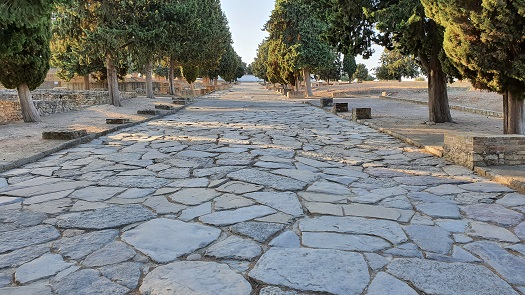
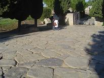
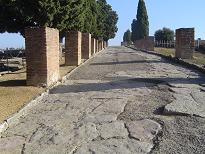
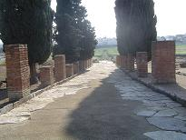
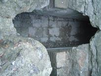
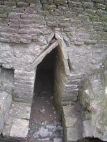

|
LA CIUDAD
Itálica se puede dividir en dos zonas bien diferenciadas: la Vetus Urbs (ciudad
vieja) y la Nova Urbs (ciudad nueva).
La primera, Vetus Urbs, fue la ciudad fundada por el general Escipión y
actualmente se encuentra bajo el casco urbano de Santiponce, de ella se
conoce muy poco.
La Nova Urbs, el barrio nuevo, fue construido por el emperador Adriano,
funcionó aproximadamente un siglo, desde el segundo tercio del siglo II
hasta mediados o finales del siglo III, y es la parte del conjunto
arqueológico que se puede visitar. Se supone que esta ciudad estaba
honoríficamente dedicada a Trajano. Era una zona residencial y
monumental. |
Las calles de Itálica se caracterizan por su
anchura unos 16m y sus aceras porticadas, hoy en día se puede apreciar su
enlosado, los bordillos de las aceras y los cimientos de los pilares de los
pórticos. El trazado viario es octogonal, formando manzanas rectangulares.

|
 |
 |
 |
Ver Calzadas
Romanas
La ciudad estuvo dotada de abastecimiento de
agua y una red de cloacas. El agua llegaba a las cisternas y de estas se
distribuía a los edificios principales, las termas y a las fuentes en los cruces
de las calles, a través de tuberías de plomo, fistulae. El acueducto del
siglo I se amplió. El acueducto tomaba el agua de manantiales del río Guadiamar,
cerca de Gerena. Se aumentó el caudal añadiendo un ramal de unos 15km que cogía
el agua de las llamadas Fuentes de Tejada, Paterna y Escacena del Campo con un
caudal diario de unos 13.000m3. Al final del acueducto se construyó otro tramo
que desviaba el agua a la cisterna. La cisterna está situada en la parte más
alta de Itálica en el extremo Oeste y tenia una capacidad de unos 900.000 litros.
|
 |
Las aguas fecales y las sobrantes del acueducto se vertían a las cloacas,
visibles actualmente en los cruces de las calles. Se aprovecharon las dos
vaguadas sobre las que se asienta la ciudad, como colectores. Una vez
construidas las cloacas se construyeron las calles y se pavimentaron. |

|
|
|
|
|
|
La Nova Urbs destaca
por los edificios públicos, seis por lo que se conoce hasta ahora, y por las Domus
esplendidas que forman un conjunto residencial lujoso repleto de mosaicos,
estatuas y mármoles importados de Grecia y Mauritania.
La mayoría de las casas reciben su nombre por
los mosaicos u ornamentaciones que aún se conservan.
Las
excavaciones arqueológicas comenzaron en el siglo XVIII, entre 1751 y 1755, de
la mano de Francisco Bruna. Desde entonces, los estudios arqueológicos en la
ciudad han sido numerosos.
|
|